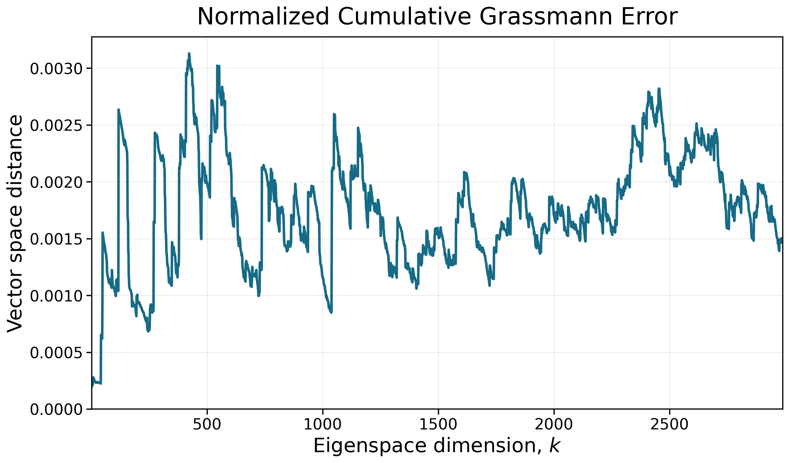

Model-order reduction · Quantum simulation · Eigensolvers
Scaling quantum reduced-order models to thousands of states.
A new statewise POD-Galerkin workflow designed for quantum problems where one or two low-energy states are not enough—and computing a large portion of the spectrum is the real task.
Research context
Learn a smaller space without discarding the physics.
Many problems in quantum chemistry, materials science, semiconductor design, and quantum computing depend on predicting a system’s energy levels and quantum states. Researchers often need to repeat this calculation as the system’s geometry, materials, or operating conditions change. This project explores how to make those repeated simulations much faster.
After the Schrödinger equation is discretized, finding these states becomes a large matrix eigenvalue problem. Standard numerical methods are accurate, but repeatedly solving the full problem can be prohibitively expensive.
The POD-Galerkin workflow focuses the computation on the portion of the spectrum we actually need. It uses previously computed quantum states to learn a compact basis, then projects the original matrix into that smaller space. The result is a reduced eigenvalue problem sized by the number of states we want to recover rather than by the much larger spatial discretization.
My contribution
Replace one growing global solve with a sequence of local ones.
The traditional workflow builds a single reduced space large enough to contain all K eigenvectors we want to compute. It then diagonalizes a dense reduced matrix whose dimension grows with K; because dense diagonalization is cubic in matrix dimension, this creates an O(K3) scaling bottleneck.
We are developing a statewise alternative whose measured cost grows approximately linearly with K over the tested range. This makes it possible to extend the POD-Galerkin workflow toward problems that require a very large number of eigenstates.

Accuracy milestone
Thousands of states, checked against DNS.
A 3,000-state run on a 5×5 square quantum-well system was compared with direct numerical simulation through the first 2,990 states.
Eigenvalue error measures how closely each predicted energy matches its reference value. Grassmann error compares the cumulative eigenspaces: zero means the spaces coincide, while larger values mean their directions are drifting apart.
eigenvalue error
overlap at K = 2,990

